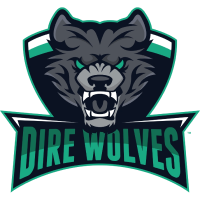

DIRE WOLVES
OPL
Cette région a longtemps été dominée par une seule équipe, mais le déclin de Chiefs Esports Club a ouvert une nouvelle ère de compétition dans l'Oceanic Pro League. Parmi les équipes qui luttent pour dominer la région, Dire Wolves s'est distinguée en remportant les deux championnats de 2017 et en représentant la région au MSI de cette année, ce qui lui vaut maintenant de se rendre au Mondial 2017. Les équipes de l'OPL ont failli se qualifier pour le Mondial dans le passé, mais ont échoué de peu. Elles doivent encore faire leurs preuves sur la scène internationale.